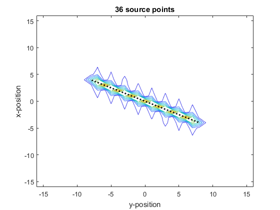

offGridLine
Create a non-binary mask for a line source
Syntax
mask = offGridLine(kgrid, startpoint, endpoint)
mask = offGridLine(kgrid, startpoint, endpoint, plot_line)
Description
offGridLine computes a non-binary mask for implementing a line source in simulations with any dimensionality. It evenly samples the line, and for each sample point computes a band-limited interpolant corresponding to a point source at that location. These point source responses are summed and scaled to give the source mask.
Examples
Nx = 32;
Ny = Nx;
dx = 1;
dy = dx;
kgrid = kWaveGrid(Nx, dx, Ny, dy);
startpoint = [-4, 8];
endpoint = -startpoint;
plot_line = true;
mask = offGridLine(kgrid, startpoint, endpoint, plot_line);
hold on
v = linspace(0, max(abs(mask(:))), 10);
contour(kgrid.y_vec, kgrid.x_vec, abs(mask), v);
set(gca, 'children', flipud(get(gca, 'children')))

Inputs
kgrid |
k-space grid structure returned by makeGrid containing Cartesian and k-space grid fields |
startpoint |
start coordinate for the line given as a row vector [m] |
endpoint |
end coordinate for the line given as a row vector [m] |
Optional Inputs
plot_line |
boolean controlling whether the line sampling points are plotted (default = false) |
Outputs
mask |
non-binary source mask for a line |
See Also
makeLine